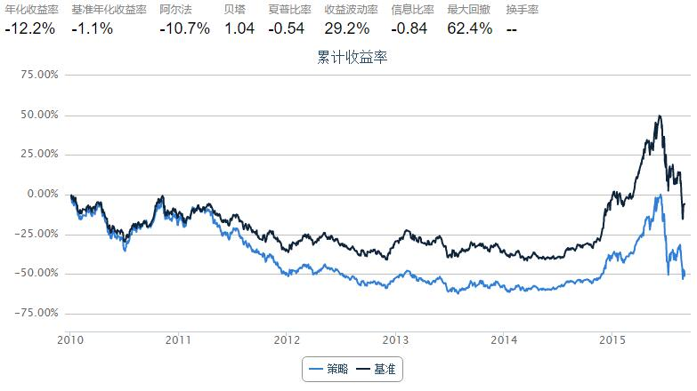

如何使用优矿之“新闻热点”？
本期讲解如何使用优矿的新闻热点相关API，以及一个“然并卵”的示例策略。
包括：
- 股票新闻热点获取：
NewsHeatIndexGet - 股票新闻情感获取：
NewsSentimentIndexGet - 股票相关新闻获取：
NewsByTickersGet
本篇中，我们只研究沪深300成分股。
from quartz.api import set_universe
universe = set_universe("HS300")
1. 获取新闻热点
使用：NewsHeatIndexGet
Type: function
Definition: DataAPI.NewsHeatIndexGet(exchangeCD='', ticker='', secShortName='', beginDate='', endDate='', secID='', field='', pandas='1')
Docstring:
包含证券相关的新闻热度指数数据，输入一个或多个证券交易代码、起止日期，获取该证券一段时间内的新闻热度指数(即证券当天关联新闻数量占当天新闻总量的百分比(%))。每天更新。（注：1、2014/1/1起新闻来源众多、指数统计有效，2013年及之前的网站来源不全、数据波动大，数据自2004/10/28始；2、新闻量的统计口径为经算法处理后证券关联到的所有常规新闻；3、数据按日更新。)
关键的参数：
secID:证券代码列表beginDate：新闻搜索开始日期endDate：新闻搜索结束日期
data = DataAPI.NewsHeatIndexGet(secID=universe, beginDate="20150916", endDate="20150916")
data.sort('heatIndex', ascending=False).head()
| secID | exchangeCD | exchangeName | ticker | secShortName | newsPublishDate | heatIndex | insertTime | updateTime | |
|---|---|---|---|---|---|---|---|---|---|
| 125 | 600030.XSHG | XSHG | 上海证券交易所 | 600030 | 中信证券 | 2015-09-16 | 4.726101 | 2015-09-16 01:10:03 | 2015-09-17 13:53:26 |
| 205 | 600837.XSHG | XSHG | 上海证券交易所 | 600837 | 海通证券 | 2015-09-16 | 3.508772 | 2015-09-15 22:05:04 | 2015-09-17 13:53:26 |
| 251 | 601688.XSHG | XSHG | 上海证券交易所 | 601688 | 华泰证券 | 2015-09-16 | 2.685285 | 2015-09-16 01:36:04 | 2015-09-17 13:53:26 |
| 241 | 601398.XSHG | XSHG | 上海证券交易所 | 601398 | 工商银行 | 2015-09-16 | 2.542069 | 2015-09-15 22:30:08 | 2015-09-17 13:53:26 |
| 269 | 601939.XSHG | XSHG | 上海证券交易所 | 601939 | 建设银行 | 2015-09-16 | 2.398854 | 2015-09-15 22:30:08 | 2015-09-17 13:53:26 |
获取的数据列表中，每一行就是对应的证券在某一天的新闻热度（heatIndex)。可以看到9月16日，中信证券（600030）荣登热度排行榜榜首！
2. 获取新闻情感
光知道新闻热度的话不够，我们还需要这道整体的新闻情感（正面or负面？）。
使用：NewsSentimentIndexGet
Type: function
Definition: DataAPI.NewsSentimentIndexGet(exchangeCD='', ticker='', secShortName='', beginDate='', endDate='', secID='', field='', pandas='1')
Docstring:
包含证券相关的新闻情感指数数据，输入一个或多个证券交易代码、起止日期，获取该证券一段时间内的新闻情感指数(即当天证券关联新闻的情感均值)。（注：1、2014/1/1起新闻来源众多、指数统计有效，2013年及之前的网站来源不全、数据波动大，数据自2004/10/28始；2、新闻量的统计口径为经算法处理后证券关联到的所有常规新闻；3、数据按日更新。)
关键的参数：
secID: 证券代码列表beginDate：新闻搜索开始日期endDate：新闻搜索结束日期
data = DataAPI.NewsSentimentIndexGet(secID=universe, beginDate="20150916", endDate="20150916")
data.sort('sentimentIndex', ascending=True).head()
| secID | exchangeCD | exchangeName | ticker | secShortName | newsPublishDate | sentimentIndex | insertTime | updateTime | |
|---|---|---|---|---|---|---|---|---|---|
| 49 | 000831.XSHE | XSHE | 深圳证券交易所 | 000831 | 五矿稀土 | 2015-09-16 | -0.294702 | 2015-09-16 09:20:07 | 2015-09-17 14:03:25 |
| 125 | 600030.XSHG | XSHG | 上海证券交易所 | 600030 | 中信证券 | 2015-09-16 | -0.171486 | 2015-09-16 01:10:03 | 2015-09-17 14:03:25 |
| 171 | 600489.XSHG | XSHG | 上海证券交易所 | 600489 | 中金黄金 | 2015-09-16 | -0.162101 | 2015-09-16 02:05:34 | 2015-09-17 14:03:25 |
| 231 | 601225.XSHG | XSHG | 上海证券交易所 | 601225 | 陕西煤业 | 2015-09-16 | -0.162101 | 2015-09-16 02:05:34 | 2015-09-17 14:03:25 |
| 95 | 002653.XSHE | XSHE | 深圳证券交易所 | 002653 | 海思科 | 2015-09-16 | -0.154720 | 2015-09-15 20:35:05 | 2015-09-17 14:03:25 |
获取的数据列表中，每一行就是对应的证券在某一天的新闻情感（heatIndex)，负数代表负面情感，正数代表正面情感。可以看到9月16日，中信证券（600030）在新闻情感指数榜上排名倒数第二！
3. 股票详细新闻获取
用户如果想更深度的剖析个别新闻对某只证券的影响，可以通过API获取详细的新闻分析列表：
使用：NewsByTickersGet
Type: function
Definition: DataAPI.NewsByTickersGet(ticker='', secShortName='', secID='', exchangeCD='', beginDate='', endDate='', field='', pandas='1')
Docstring:
包含证券相关的新闻数据，同时可获取针对不同证券的新闻情感数据。输入证券代码或简称、查询的新闻发布起止时间，同时可输入证券交易所代码，获取相关新闻数据，如：新闻ID、新闻标题、发布来源、发布时间、入库时间等。(注：1、自2014/1/1起新闻来源众多、新闻量日均4万左右，2013年及之前的网站来源少、新闻数据量少；2、数据实时更新。)
关键的参数：
secID: 证券代码列表beginDate：新闻搜索开始日期endDate：新闻搜索结束日期
我们来试着获取2015年9月16日当天中信证券的相关新闻：
data = DataAPI.NewsByTickersGet(secID='600030.XSHG', beginDate='20150916', endDate='20150916')
data.sort('relatedScore', ascending=False).head(10)
| secID | exchangeCD | exchangeName | ticker | secShortName | newsID | newsTitle | relatedScore | sentiment | sentimentScore | newsPublishSite | newsPublishTime | newsInsertTime | |
|---|---|---|---|---|---|---|---|---|---|---|---|---|---|
| 71 | 600030.XSHG | XSHG | 上海证券交易所 | 600030 | 中信证券 | 14554253 | “股民好伴侣”南方理财金H详细操作指南 | 0.999999 | -1 | -0.028868 | 中国经济网 | 2015-09-16 09:27:00 | 2015-09-16 09:41:30 |
| 106 | 600030.XSHG | XSHG | 上海证券交易所 | 600030 | 中信证券 | 14564116 | 嘉实超短债债券：2015年第八次收益分配公告 | 0.999993 | -1 | -0.196649 | 证券之星 | 2015-09-16 13:16:23 | 2015-09-16 13:37:17 |
| 118 | 600030.XSHG | XSHG | 上海证券交易所 | 600030 | 中信证券 | 14575307 | 银华交易型货币(ETF)：关于增加东兴证券、中航证券为基金申购赎回代理机构的公告 | 0.999950 | -1 | -0.402002 | 证券之星 | 2015-09-16 16:14:01 | 2015-09-16 16:57:18 |
| 31 | 600030.XSHG | XSHG | 上海证券交易所 | 600030 | 中信证券 | 14539393 | 中信证券总经理程博明被查 已有11名骨干被带走 | 0.999950 | -1 | -0.097207 | 新浪财经 | 2015-09-16 02:42:00 | 2015-09-16 03:19:25 |
| 19 | 600030.XSHG | XSHG | 上海证券交易所 | 600030 | 中信证券 | 14537527 | 中信三家营业部“重出江湖” 7个交易日买入A股119.49亿元占比近17% | 0.999181 | -1 | -0.133462 | 新浪财经 | 2015-09-16 01:36:00 | 2015-09-16 01:40:36 |
| 33 | 600030.XSHG | XSHG | 上海证券交易所 | 600030 | 中信证券 | 14539225 | 中信证券危机应对:火上浇油 | 0.998778 | -1 | -0.253825 | 和讯网 | 2015-09-16 03:14:10 | 2015-09-16 03:16:14 |
| 40 | 600030.XSHG | XSHG | 上海证券交易所 | 600030 | 中信证券 | 14551566 | 中信证券事件再升级:总经理被查 遇前所未有危机 | 0.998508 | -1 | -0.225816 | 网易财经 | 2015-09-16 05:01:25 | 2015-09-16 08:58:45 |
| 61 | 600030.XSHG | XSHG | 上海证券交易所 | 600030 | 中信证券 | 14548828 | 中信证券事件再升级：总经理程博明被查 | 0.998508 | -1 | -0.221037 | 中国证券网 | 2015-09-16 08:08:43 | 2015-09-16 08:12:59 |
| 129 | 600030.XSHG | XSHG | 上海证券交易所 | 600030 | 中信证券 | 14584031 | 复盘中信证券：它曾是证券行业的新一代龙头 | 0.997775 | -1 | -0.008536 | 金融界 | 2015-09-16 21:44:48 | 2015-09-16 21:50:33 |
| 53 | 600030.XSHG | XSHG | 上海证券交易所 | 600030 | 中信证券 | 14549075 | “国家队主攻手”陷救市漩涡 中信证券总经理程博明被调查 | 0.997283 | -1 | -0.159776 | 新华网 | 2015-09-16 07:26:00 | 2015-09-16 08:16:56 |
4. 使用新闻数据编写简单策略
策略的指导想法是买入市场关为热点，并且新闻情感为正面的股票。
策略参数：
- 开始日期：2010年1月1日
- 结束日期：2015年9月1日
- 选择域：沪深成分股（2010年1月1日采样）
- 调仓周期：10个交易日
- 买入方法：等权重买入
- 规则：选取热度最高的100支股票，从中再选取情感最高并且为正的20支。
from CAL.PyCAL import *
start = '2010-01-01'
end = '2015-09-01'
benchmark = 'HS300'
universe = set_universe('HS300', start)
capital_base = 1000000
freq = 'd'
refresh_rate = 10
def initialize(account):
pass
def handle_data(account):
cal = Calendar('China.SSE')
endDate = cal.advanceDate(account.current_date, '-1b', BizDayConvention.Preceding)
beginDate = cal.advanceDate(endDate, '-10b', BizDayConvention.Preceding)
# 获取当前参考期内股票热度
data = DataAPI.NewsHeatIndexGet(secID=account.universe, beginDate=beginDate.strftime("%Y%m%d"), endDate=endDate.strftime("%Y%m%d"))
# 只选取热度排名前100的股票
sortedHeatIndex = data.groupby('secID')[['secID', 'heatIndex']].mean()
choosenStocks = list(sortedHeatIndex.sort('heatIndex', ascending=False).index[:100].values)
# 获取选取的50支股票的情感指数
data = DataAPI.NewsSentimentIndexGet(secID=choosenStocks, beginDate=beginDate.strftime("%Y%m%d"), endDate=endDate.strftime("%Y%m%d"))
# 只选取正面情感最高的20支股票
data = data.groupby('secID')[['secID', 'sentimentIndex']].mean()
sortedSentimentIndex = data.sort('sentimentIndex', ascending=False)
sortedSentimentIndex = sortedSentimentIndex[sortedSentimentIndex['sentimentIndex'] > 0]
choosenStocks = list(sortedSentimentIndex.index[:20].values)
estimtedPortfolioValue = account.referencePortfolioValue
# 卖出当前持仓
for s in account.valid_secpos:
order_to(s, 0)
# 等比例买入选择股票
for s in choosenStocks:
order(s, int(estimtedPortfolioValue / len(choosenStocks) / account.referencePrice[s] / 100.)*100)

看来这么简单的想法确实是“然并卵”！